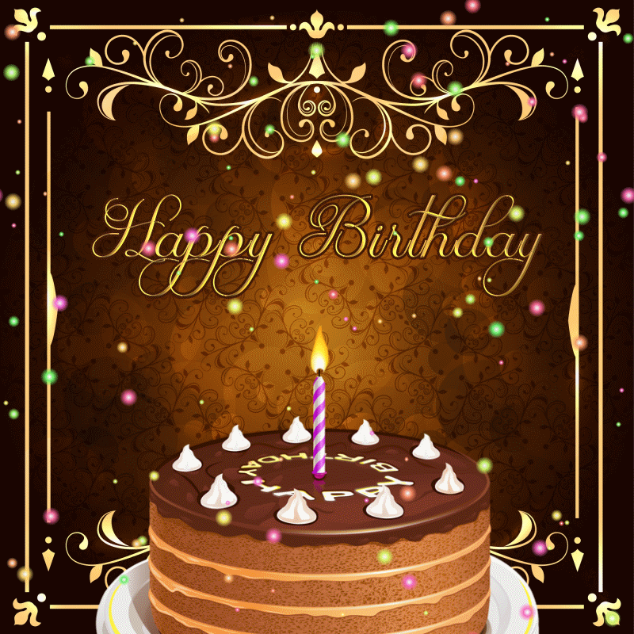

BIRTHDAY

Take into consideration whether they want a smaller or larger party, or if they want to go out or stay in.
Come up with a special theme for the party based on what the honoree likes.
Plan your guest list. Make sure you have all the most important people to the birthday person included.
Send out your birthday invites early. Plan to send invites out three to five weeks in advance. If you send out invitations too late, some guests might not be able to make it. Also, make sure to include all the important information on the invites. This includes the who, what, when, where, and why of the party. For more details, check out our resource on what to include in party invitations or our guide on party invitation wording.
Gather all the needed party supplies and decorations. Decor makes or breaks a party, so make sure to put some thought in your choices.
Put the whole thing together. Get friends or family to help so that you can enjoy the party planning together.
Have fun, it’s a party after all!
Dinner Party
If the birthday boy or girl has a favorite restaurant, this is often a perfect option. It’s a great way to have an intimate dinner with loved ones that’s still focused around the honoree. Friends, family, and food– there’s few better birthdays.
Photo Booth Party
If the birthday girl is a selfie queen throw a photo booth party. Gather fun decorations like boas, hats, and quote signs that read “Happy Birthday (Name)” and set up a decorative background, lighting, and a photographer. Then let the guests go wild and create memories for years to come.
Game Night
If there’s a tight knit group of friends and family celebrating an 18th birthday, consider throwing a game night party. Feature plenty of party games, including the honoree’s favorites. Enjoy a night filled with laughter and fun.Thrill the birthday boy or girl with unexpected tickets to their favorite band (or sports game). This is sure to bring a smile to their face and build lasting memories of their 18th.